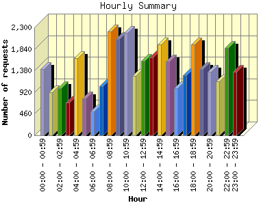
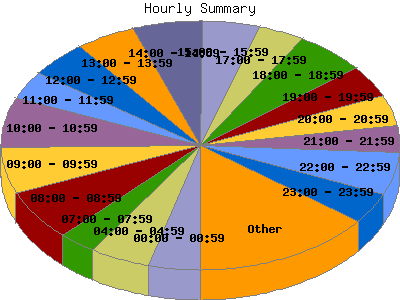

Report generated by Analog 6.0 and Report Magic 2.21
|
Web Server Statistics for "Harish Narayanan (hnarayan) - June 2007" Report generated by Analog 6.0 and Report Magic 2.21 |
The Hourly Summary identifies the level of activity broken down by each hour. Remember that one page hit can result in several server requests as the images for each page are loaded. This summary also compares the level of activity during working hours and after hours as a total for the report time frame.


| Hour | Number of requests | Number of bytes transferred | Percentage of the bytes | Percentage of the requests | |
|---|---|---|---|---|---|
| 1. | 00:00 - 00:59 | 1,405 | 52.190 MB | 3.71% | 4.15% |
| 2. | 01:00 - 01:59 | 916 | 53.407 MB | 3.79% | 2.71% |
| 3. | 02:00 - 02:59 | 1,003 | 51.546 MB | 3.66% | 2.96% |
| 4. | 03:00 - 03:59 | 698 | 45.016 MB | 3.20% | 2.06% |
| 5. | 04:00 - 04:59 | 1,643 | 68.739 MB | 4.88% | 4.85% |
| 6. | 05:00 - 05:59 | 787 | 33.736 MB | 2.40% | 2.33% |
| 7. | 06:00 - 06:59 | 513 | 47.136 MB | 3.35% | 1.52% |
| 8. | 07:00 - 07:59 | 1,045 | 54.752 MB | 3.89% | 3.09% |
| 9. | 08:00 - 08:59 | 2,216 | 76.162 MB | 5.41% | 6.55% |
| 10. | 09:00 - 09:59 | 2,053 | 46.526 MB | 3.30% | 6.07% |
| 11. | 10:00 - 10:59 | 2,185 | 48.540 MB | 3.45% | 6.46% |
| 12. | 11:00 - 11:59 | 1,262 | 41.026 MB | 2.91% | 3.73% |
| 13. | 12:00 - 12:59 | 1,588 | 86.987 MB | 6.18% | 4.69% |
| 14. | 13:00 - 13:59 | 1,661 | 61.208 MB | 4.35% | 4.91% |
| 15. | 14:00 - 14:59 | 1,940 | 75.397 MB | 5.35% | 5.73% |
| 16. | 15:00 - 15:59 | 1,573 | 58.539 MB | 4.16% | 4.65% |
| 17. | 16:00 - 16:59 | 1,011 | 43.767 MB | 3.11% | 2.99% |
| 18. | 17:00 - 17:59 | 1,277 | 103.403 MB | 7.34% | 3.77% |
| 19. | 18:00 - 18:59 | 1,941 | 67.991 MB | 4.83% | 5.73% |
| 20. | 19:00 - 19:59 | 1,411 | 68.905 MB | 4.89% | 4.17% |
| 21. | 20:00 - 20:59 | 1,361 | 63.004 MB | 4.47% | 4.02% |
| 22. | 21:00 - 21:59 | 1,145 | 57.937 MB | 4.11% | 3.38% |
| 23. | 22:00 - 22:59 | 1,861 | 59.635 MB | 4.24% | 5.50% |
| 24. | 23:00 - 23:59 | 1,353 | 42.628 MB | 3.03% | 4.00% |
| Work Hours (8:00am-4:59pm) | 15,489 | 538.153 MB | 38.22% | 45.76% | |
| After Hours (5:00pm-7:59am) | 18,359 | 870.028 MB | 61.78% | 54.24% | |
This report was generated on August 3, 2007 10:00.
Report time frame June 1, 2007 00:00 to June 30, 2007 23:55.
| Web statistics report produced by: | |
 Analog 6.0 Analog 6.0 |  Report Magic 2.21 Report Magic 2.21 |